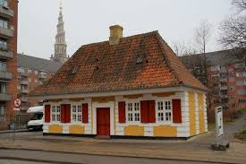

Vagthuset er opført i 1724 som porternes bolig ved Christianshavns Vagt. Huset har været militærvagtbegygning fra 1857 til 1916. Vagthuset blev dengang kaldt for Acciseboden. I 1936 skulle Torvegade udvides og derfor blev det nødvendigt at flytte Vagthuset 14 meter mod nord. Huset befinder sig nu på Torvegade ved volden - tæt ved stedet hvor Christianshavns Port lå, som blev nedlagt i 1936.
